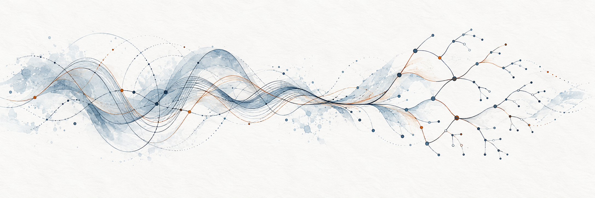

Dense Neural Networks are not Universal Approximators, NeurIPS 2026. Also presented at the GFM Workshop, ICML 2026.
Publications
A Note on Graphon-Signal Analysis of Graph Neural Networks, Preprint. 2025.
Generalization, Expressivity, and Universality of Graph Neural Networks on Attributed Graphs, ICLR. 2025.
